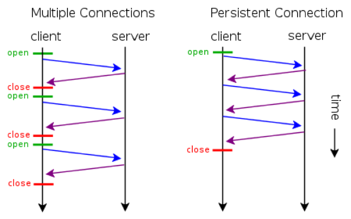

It was already established that HTTP is a protocol used by applications to communicate with one another. Communication only happens when a user-agent, often browsers, establishes a connection to a server and sends a request message. The server then responds with a response message. A request from a browser may be serviced with just a single connection if the response containing the HTML file does not contain links that point to another resource.
For example, whenever a user-agent request for the HTML file of a website that only contains text and embedded formatting, a single connection is enough in order to serve the request. However, websites nowadays have a more complex composition: they contain links that points to another HTML files, images located in a certain directory, and CSS files for the design of the website.
In order for web browsers to display the contents of the website, it will first establish a connection before creating a request message to send to the server hosting the website. When it receives the response from the server, it will extract the HTML body in the response message. When it encounters a link in the HTML body that points to another resource, such as a CSS file, it will automatically send a request to retrieve said file. The same thing happens with other resources like images.
The early versions of HTTP were developed such that when a user-agent request a website, the server serves the request, and then terminates the connection immediately. When the browser reads the HTML body and encounters an external link, it will establish another connection and send another request to retrieve what it needs. Multiple connections will have to be established in order to properly render the website.
This is a problem because nobody might be patient enough to wait for the website to be rendered properly.
Persistent connection is a feature introduced in HTTP 1.1, allowing several resources to be fetched with the same connection. This addresses the problem induced by multiple connections. Persistent connections also allow the pipelining of request so that users can make multiple request without waiting for the response in the first request.